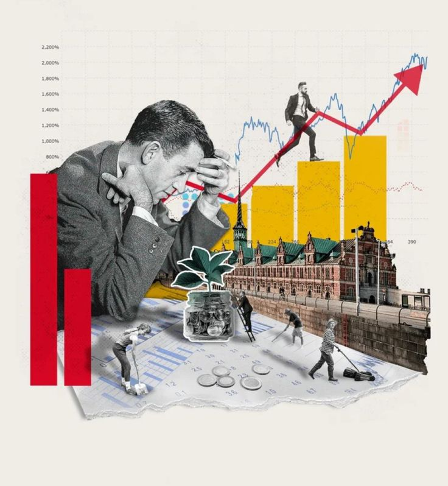
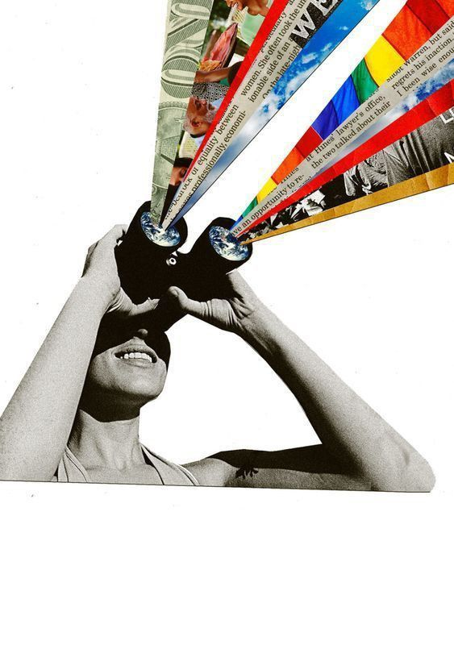

Trading Risk Management & TDA
Detecting topological market breakdown via persistent homology on sliding time windows.
✦ Algorithmic Early Warning SystemMathematics & Computer Science @ Galatasaray University. Exploring Topological Data Analysis, Risk Analytics, and Unstructured Data Engineering.

Detecting topological market breakdown via persistent homology on sliding time windows.
✦ Algorithmic Early Warning SystemDecision-driven category preservation & signal processing for maturity metrics.
☘ Messy Data Pipeline ArchitectureTransforming raw unstructured text abnormalities into clean predictive features.
❀ Text Normalization & Feature ExtractionPortfolio risk scoring, default probability, and exposure modeling.
✵ Active Lab Experiment
Predictive churn classifier coupled with automated AI retention workflows.
✦ ML Classifier + Action AssistantNLP architecture classifying structural text patterns and misinformation.
☘ Text Classification Engine